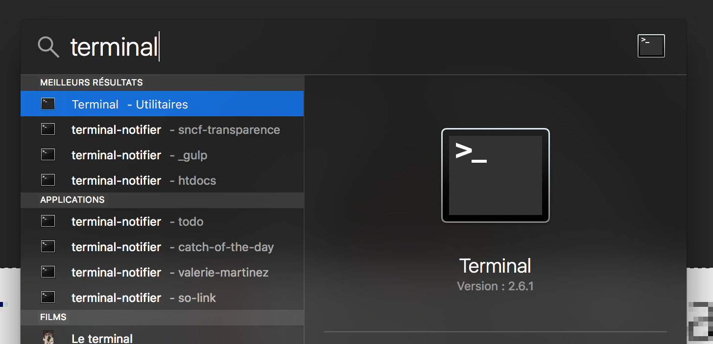
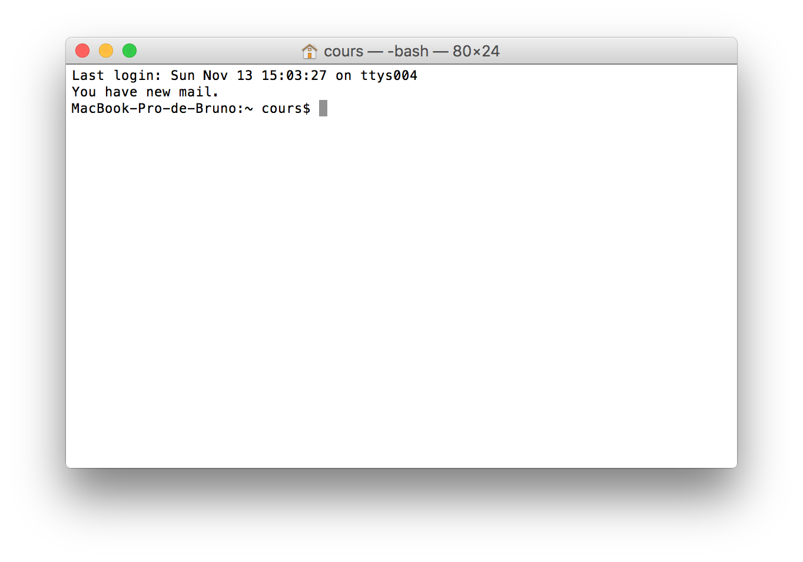
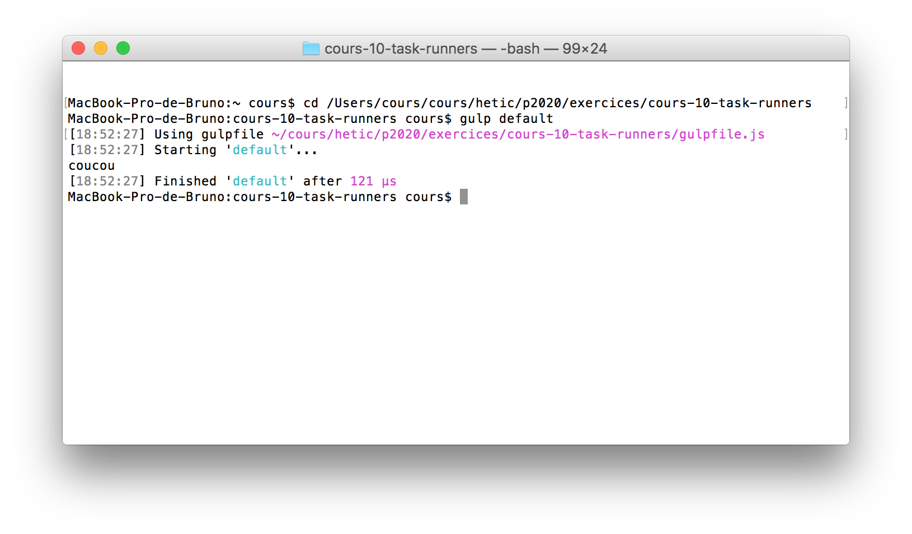

H2 - P2020
Développement web
Cours 10 - 2016-11-14
- github : https://github.com/brunosimon/hetic-p2020
- site : http://bruno-simon.com/hetic/p2020/
- contact : bruno.simon@hetic.net
Task Runners
Pour optimiser un site, il faut compresser les images, concaténer et optimiser le JS, minimifier et préfixer le CSS, etc.
Tout faire à manuellement est contre productif.
Les task runners sont des scripts permettant d'automatiser ces actions.
En opposition, il existe des logiciels qui peuvent s'occuper de certaines tâches.
L'avantage d'un task runner par rapport à un logiciel est que n'importe quel développeur qui récupère le projet n'a qu'à lancer le task runner pour que les tâches s'accomplissent automatiquement.
Idéal pour un travail en équipe.
Il en existe plusieurs :
Chacun possède ses propres critères :
- Performance
- Facilité
- Modulabilité
- Compatibilité
- Quantité et qualité des tasks
- ...
À vous de décider lequel choisir
Dans le cadre du cours, nous allons utiliser Gulp

Très répandu, facile à mettre en place, moyennement facile à configurer, modulable et possède un très large pannel de tasks
Node.JS
Gulp, comme les autres task runners, utilise Node.JS
Node.JS permet d'executer du javascript ailleurs que dans le navigateur afin d'accomplir des actions variés
Aujourd'hui, Node.js est utilisé pour faire tourner des sites, des jeux, des tasks runners, des installations digitales, etc.
Télécharger et installez la dernière version (Windows/OSX) :
Terminal
Pour pouvoir utiliser les fonctionnalités de la suite du cours, nous allons utiliser le Terminal
Sur Mac, recherchez simplement l'application Terminal

Voici votre terminal

Celui-ci fonctionne avec les commandes unix que nous allons voir plus tard
Alternatives :
Sur PC, bonne chance
Sur PC, utilisez l'Invite de commandes
Afin de faire fonctionner les commandes unix, installez Gow
Nous allons voir qu'une infime partie des commandes unix séparées en 3 groupes
- Primordiales
- Pratiques
- Bonus
Commandes primodiales
-
pwd : afficher le chemin du dossier courant
pwd -
ls : afficher les fichiers et dossiers dans le dossier courant
ls -
cd : se déplacer dans un dossier
cd dossier-1/dossier-2 cd ../..
Commandes pratiques
-
clear : effacer le contenu du terminal
clear -
man : afficher le manuel d'une commande (Q pour quitter)
man clear -
open : ouvrir un dossier dans le finder
open ./ open dossier-1
Commandes pratiques
- touch : créer un fichier
- cp : copier un fichier ou dossier
- mv : déplacer un fichier ou dossier
- mkdir : créer un dossier
- rm : supprimer un fichier
- rmdir : supprimer un dossier
- vim : éditer un fichier avec Vim
-
say : faire parler votre ordinateur
say "Coucou la famille"
Astuces
- Sur Mac, vous pouvez créer des onglets avec CMD + T
- Pour ne pas avoir à écrire un chemin entier, glissez/déposez le dossier depuis le finder dans le terminal
- Quand vous écrivez le nom d'un fichier ou dossier, tapez la touche TAB pour auto-compléter
- Utilisez les flèches haut et bas pour naviguer dans l'historique des commandes
NPM
Les scripts nodes sont appelés packages ou modules. Dans le cadre d'un projet, on parle aussi de dépendances
Il en existe des dizaines de milliers que l'on peut retrouver le site www.npmjs.com
NPM : Node Package Manager
En installant Node.js, on a aussi installé NPM que l'on peut utiliser depuis le terminal
Nous allons prendre comme exemple le package gulp-cssnano qui nous permettra plus tard de compresser notre CSS
Pour installer le package depuis le terminal, on peut écrire
npm install gulp-cssnano
Un dossier node_modules a été créé et ce dossier contient gulp-cssnano et toutes les dépendances dont gulp-cssnano a besoin
Il y a toujours beaucoup trop de modules. Lorsque l'on souhaite partager un projet, il est préférable de ne pas partager ces modules
Sauf qu'il serait embêtant pour chaque développeur de devoir réinstaller chaque package
La solution : package.json
C'est un fichier qu'on met en général à la racine du projet et qui contient divers informations. Parmi ces informations, peuvent se trouver les dépendances à installer.
NPM permet de créer ce fichier facilement
Depuis votre terminal, rendez vous dans le dossier de votre projet et lancez la commande suivante
npm init
Une série de question sont posées, les réponses n'ont que peu d'importance
Pour installer nos dépendances tout en les renseignant dans package.js, il suffit de rajouter --save (ou -S) à notre commande
npm install --save gulp-cssnano
Cela va installer le module dans node_modules (comme tout à l'heure), mais va aussi le rajouter dans package.json
Lorsque nous devons versionner le projet ou l'envoyer à un développeur, il ne faudra pas envoyer le dossier node_modules, mais il faudra bien inclure le fichier package.json
Entant que développeur qui arrive sur le projet, pour installer les dépendances directement depuis le package.json il suffit de faire un npm install sans aucun autre paramètre
npm install
Régulièrement, NPM peut renvoyer une erreur s'il lui manque certains droits
Pour lui donner les droits, précédez les commandes par sudo
sudo npm install
Cela aura pour effet de vous demander votre mot de passe
sudo n'existe pas sur Windows
Il est possible d'installer un module globalement. Cela veut dire que la commande pour éxecuter le module pourra être appelé de n'importe où.
Pour cela, il suffit de rajouter -g en paramètre
sudo npm install -g keppler
Gulp
Enfin
Pour commencer, installons les commandes gulp
sudo npm install -g gulp-cli
Rajoutons gulp dans les dépendances du projet
sudo npm install --save gulp
Créez un fichier gulpfile.js
var gulp = require( 'gulp' );
gulp.task( 'default', function()
{
console.log( 'coucou' );
} );
Dans le terminal, éxecutez la commande suivante
gulp default
Si tout s'est bien passé :

var gulp = require( 'gulp' );
Permet d'aller chercher gulp dans node_modules
Utilise Browserify et fait parti de Node JS
gulp.task( 'pwet', function()
{
} );
Permet de créer un tâche.
Le premier paramètre correspond au nom de la tâche qu'on pourra executer depuis le terminal
gulp pwet
Créons une tâche qui minimify le css
Nous allons avoir besoin des packages gulp-cssnano et gulp-rename en pensant bien à les rajouter au package.json
sudo npm install --save gulp-cssnano gulp-rename
(Il est possible d'en installer plusieurs en même temps)
Créons une tâche css pour minimifier le css dans gulpfile.js
// Dependencies
var gulp = require( 'gulp' ),
gulp_css_nano = require( 'gulp-cssnano' ),
gulp_rename = require( 'gulp-rename' );
// CSS task
gulp.task( 'css', function()
{
return gulp.src( './src/css/style.css' ) // Get main CSS file
.pipe( gulp_css_nano() ) // Minify it
.pipe( gulp_rename( 'style.min.css' ) ) // Rename it
.pipe( gulp.dest( './src/css/' ) ); // Put it in folder
} );
Créons une tâche js pour concatener les fichier js et les minimifier
// Dependencies
var gulp = require( 'gulp' ),
gulp_concat = require( 'gulp-concat' ),
gulp_uglify = require( 'gulp-uglify' );
// JS task
gulp.task( 'js', function()
{
return gulp.src( [ // Get JS files (in order)
'./src/js/fastclick.js',
'./src/js/script.js'
] )
.pipe( gulp_concat( 'script.min.js' ) ) // Concat in one file
.pipe( gulp_uglify() ) // Minify them
.pipe( gulp.dest( './src/js/' ) ); // Put it in folder
} );
Ces tâches sont pratiques, mais on aimerait qu'elles se lancent automatiquement
Gulp intègre une fonctionnalité de surveillance des fichiers
Créons une tâche watch
// Watch task
gulp.task( 'watch', function()
{
// Watch for CSS modifications
gulp.watch( './src/css/style.css', [ 'css' ] );
// Watch for JS modifications (but not for script.min.js)
gulp.watch( [ './src/js/**', '!./src/js/script.min.js' ], [ 'js' ] );
} );
Désormais, lorsqu'on lance la tâche watch le terminal continue d'éxecuter le watch et lance les tâche css ou js
Pour arrêter la tâche CTRL + C
Pour finir, nous pouvons créer une tâche par défaut qui s'occupe de lancer le css, le js et le watch
gulp.task( 'default', [ 'css', 'js', 'watch' ] );
Le second paramètre d'une tâche peut être un tableau des différentes tâches à éxecuter
Si la tâche s'apelle default inutile de le spécifier dans le terminal
gulp
Nous n'avons vu là que des tâches de base peu complètes
Pour les améliorer, nous pourrions par exemple gérer les erreurs avec Plumber, gérer les sourcemaps avec Sourcemaps et afficher une notification sur le desktop avec Notify
Quelques idées de tâches
- Compresser les images
- Créer des sprites
- Autopréfixer le CSS
- Retirer toutes le CSS inutilez
- Convertir du Sass ou Stylus en CSS
- Transpiler de l'ES6 en ES5
- Convertir des fichiers Pug (anciennement Jade) en HTML
- Uploader automatiquement sur le FTP
- Rafraichir automatiquement la page
Les tasks runners font aujourd'hui parti de l'environnement de développement web
Gardez vos tâches simples et efficaces
N'oubliez pas de bien renseigner les dépendances dans package.json